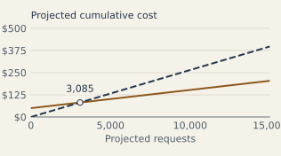
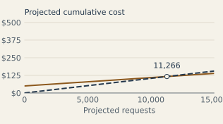
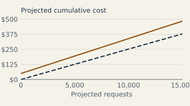

Context Compiler (CC) | Investment research | November 2026
Context Compiler benchmark report
We tested how systems select evidence, retain financial definitions and answer questions when filings change. Each study below states its comparison and scoring rule. The tasks, models and budgets differ across studies.
Research program
A token is a unit of text read or generated by a model. A context allowance limits how much evidence a system can supply. A fully supported answer gives the required figures and claims correctly and cites evidence for each. Frozen scores use the answer key fixed before the run. Adjudicated scores include a later review of disputed evidence.
Evidence selection and answer quality
Retrieval-augmented generation (RAG) gives a model passages selected by search. Hybrid retrieval combines keyword search with search by meaning and ranks the combined results. Graph RAG follows links between records to find evidence. Long-context runs gave the model whole documents. A Reasoning Yield Frontier plots the fraction of fully supported answers against tokens consumed at each tested limit.
In an exploratory six-question comparison, one model answered each question once at each of three context limits. At a limit of 1,200 tokens, Graph RAG with CC scored 6/6, Graph RAG alone 5/6 and CC alone 4/6. At 600 tokens, the combined system scored 3/6 and both alternatives scored 4/6. A separate test added typed edges, links that label the relationship between records, to hybrid retrieval. It scored 5/6 versus 2/6 for retrieval alone and 4/6 for CC in earlier runs on the same known questions.
- Graph comparison by context limit (CSV)
- Whole filings and search on the two-bank frontier
- Engineered bank graph and scoring review
Source authority and historical replay
Source authority determines which disclosure governs a figure. Supersession means a later disclosure replaces an earlier one for a particular measure. A historical replay must still use what was available on the original research date. In a test with 15 synthetic sources and no answering model, rule-aware retrieval, fresh compilation and compilation from stored data all delivered the required evidence in 42 task-and-date combinations. All three reproduced 105 historical requests byte for byte. Stored data reduced source visits from 1,372 to 66 compared with rebuilding each compilation.
Adding definitions as research proceeds
On 64 Regions and KeyCorp filing labels, a model proposed how to map each label to a measure. A second pass saw the evidence without seeing the proposal. Against labels checked independently against the filings, the proposer got 55/64 right and the second pass got 56/64. They agreed on seven wrong mappings.
The team held Huntington out of development and fixed its six tasks, expected answers and rules for accepting changes before the run. Each proposed mapping had one attempt within its output budget. A fixed rule simulated review. Two essential mappings received incomplete verification responses and were withheld. Selected document sections scored 4/6, sections plus a glossary 3/6 and CC 1/6. CC did answer a reconciliation question using prior mappings with no new mapping calls.
In a later cross-quarter check, nine of 22 Huntington rows matched known labels, nine had proposed matches from figures repeated across reporting periods, and four were new. Independent review confirmed those classifications. This check used existing evidence and made no model calls.
Agents and shared research files
A Codex agent could search filings and make additional model calls through its software development kit (SDK). In a held-out six-turn comparison that included a continuing conversation, the agent alone produced five fully supported answers and the agent with CC produced four. In a separate stateless run, each turn started with no conversation history. Both systems scored 4/6.
We also compared agents using versioned shared files with agents using versioned releases of reviewed definitions and mappings. Both passed four of nine primary tasks. CC passed a Regions income-basis question that files missed. Files passed a historical replay that CC missed. In a separate four-system study, the agent with original documents passed 9/11 matched tasks, the agent with shared files 8/11, the model given compiled context directly 8/11 and the agent with CC 7/11. The run reached its token limit before all planned tasks ran.
Inference and preparation costs
The direct application programming interface (API) runs sent a prepared evidence packet to an answering model. They recorded input and output tokens, then priced that usage at the study rates. A second run measured prompt caching, where the provider charges a lower rate to reread previously submitted input. The economic model adds estimated preparation costs and varies the mix of repeat questions, new questions and filing changes.
The Economics of Analytical Context
The product-page chart compares four observed configurations of Claude Fable 5.2. The compiled context included analytical definitions and source explanations. The retrieval configurations supplied up to 1,200 or 4,800 tokens of evidence. Medium and high refer to the model’s reasoning-effort settings.
| Evidence | Effort | Fully supported | Mean cost |
|---|---|---|---|
| Compiled context | Medium | 43/50 (86%) | $0.054 |
| Compiled context | High | 46/50 (92%) | $0.068 |
| Retrieval, 1,200 tokens | High | 40/50 (80%) | $0.062 |
| Retrieval, 4,800 tokens | High | 39/50 (78%) | $0.095 |
For each configuration, the quality score covers ten original financial questions, each run five times. Judges scored responses blind against a fixed rubric. The mean cost uses all 75 financial attempts, including 25 attempts on five additional questions. It covers input and output charges, including reasoning tokens. Preparation and maintenance costs are excluded.
The connecting line identifies the two configurations for which no other displayed observation achieved at least as much quality at equal or lower cost with a strict improvement on either measure. Intermediate performance was not measured. The ten questions limit the precision of the quality differences. In particular, the question-level bootstrap intervals for both medium-effort CC versus high-effort retrieval comparisons include zero.
Open the quality–cost chartReasoning yield on 18 investment questions
A separate benchmark covered 18 questions about ten financial institutions. Compiled definitions and evidence produced 16 fully supported answers (88.9%). Hybrid retrieval produced eight (44.4%). CC delivered 17.95× the reasoning yield and 12.48× as many fully supported answers per dollar spent running the model.
Reasoning yield = (fully supported answers ÷ total model tokens used) × 1,000,000. Tokens from all attempts count. An answer receives credit when its figures and claims are correct, complete and supported by the disclosures.
Recurring research | Direct API
Answer quality across 44 recurring requests
Across repeated questions, new filings and a second bank, CC carried forward reviewed financial definitions. The model produced more answers an analyst could trace to the filings, at lower inference cost.
- 8.4xReasoning YieldUnder frozen scoring, CC delivered 75% more fully supported answers while consuming fewer model tokens.
- 73%Lower inference expense$0.33 for CC and $1.21 for retrieval across the original 44 requests.
- 38.7%Lower warm inference expenseCC scored 6/6 and retrieval scored 4/6 on immediate repeats. Both systems hit the prompt cache.
Experimental results specific to the tested investment-research workloads. Inference expense excludes semantic preparation and maintenance. Over these 44 requests, the inference savings did not cover modeled preparation costs.
| Measure | CC | Hybrid retrieval |
|---|---|---|
| Correct, fully supported answers | 42 | 24 |
| Unsupported or incorrect outcomes | 2 | 20 |
| Total model tokens consumed | 109,190 | 524,712 |
| Fully supported answers per million tokens | 384.7 | 45.7 |
Reasoning Yield = (correct, fully supported answers / total model tokens consumed) x 1,000,000. Tokens spent on failed attempts count too.
Frozen and adjudicated scores | Measurement method
| Scoring method | CC | Hybrid retrieval | CC advantage |
|---|---|---|---|
| Frozen benchmark | 42/44 | 24/44 | 18 answers |
| Independent adjudication | 42/44 | 26/44 | 16 answers |
Independent review accepted citations on two retrieval answers that the frozen answer key had missed. Both rows score the same model responses.
A fully supported answer had to give every required figure and claim correctly and cite evidence for the right bank, measure and period. The frozen scorer accepted source quotations and compiler references. On the frontier's unanswerable question, a correct abstention earned credit.
Claude Sonnet 5.5 answered without tools, with the same instructions and a 1,500-token output limit. The frontier tested four context allowances on Regions Financial and KeyCorp. The separate lifecycle followed 44 requests per system, including repeated questions, changed filings, a second issuer and historical replay. The team developed the answer key and pack with the filings in view.
Provider usage was priced at the study's rates per million tokens of $2 for ordinary input, $2.50 for cache writes, $0.10 for cache reads and $10 for output. The original lifecycle had no cache hits in either arm. Inference totaled $0.326676 for CC and $1.207584 for retrieval, including failed answers.
The warm comparison repeated six questions from one issuer immediately after seeding each system's five-minute prompt cache. The warm calls cost $0.0215164 for six supported CC answers and $0.0350742 for four supported retrieval answers. Both systems generated fresh answers. That leaves about $0.00226 in inference savings per warm request.
Economic Crossover
Across the 44 observed requests, CC saved $0.88 in measured inference expense. The cost model allocated $2.12 to semantic preparation alone. On those assumptions, CC did not recover preparation costs at any point in the lifecycle.
An unsupported figure can send an analyst back to the filing. Independent review left 18 unsupported or incorrect retrieval answers and two CC answers. At an assumed five minutes per correction and $250 per analyst hour, the difference of 16 answers would be worth 80 minutes, or about $333. The curves exclude this sensitivity because the study did not measure analyst correction time.
Modeled cost over 44 observed requests

Including allocated preparation and machine time, CC ended at $2.45 and retrieval at $1.32.
Projection for mostly new questions

Projected crossover at 3,085 requests. 80% new questions using existing definitions, 10% warm repeats and 10% filing changes.
Projection for mostly repeat questions

Projected crossover at 11,266 requests. 80% warm repeats, 15% new questions using existing definitions and 5% filing changes.
Projection for mostly filing changes

No projected crossover. At 70% filing changes, 20% new questions using existing definitions and 10% warm repeats, each request widens the gap.
Cost assumptions and underlying data
For the original 44 requests, the model allocated recorded issuer mapping across 24 exported documents and assigned 28 of 46 historical task bindings to this workload. It repriced that work at the answering model's rates and valued local compute at $1 per machine-hour for both systems. Human review, original pack development and customer integration remain unpriced.
The projections use the measured average inference cost for each task category. Cumulative retrieval cost is request count times its weighted cost per request. CC adds the $50 setup and a share of update cost for changed filings. The crossover is the first whole request at which CC's modeled cumulative cost falls below retrieval's. Cache expiry, answer reuse and different maintenance costs can move or eliminate it.
Answer quality and token use
Claude Sonnet 5.5 answered questions about margins, deposit costs, conflicting sources and guidance using 41 public filings and earnings documents, from the fourth quarter of 2025 through the third quarter of 2026. Credit required correct figures, complete answers and citations to the passages that supported them. One question called for an abstention.

| System | Fully supported | Tokens per question | Supported answers per million tokens |
|---|---|---|---|
| cc, bank-adapted rules | 42/48 | 2,595 | 337 |
| Whole documents | 38/48 | 382,919 | 2.1 |
| Dense retrieval | 24/48 | 12,890 | 39 |
| Hybrid retrieval | 21/48 | 12,154 | 36 |
| cc, original rules | 6/48 | 1,647 | 76 |
The table uses the 2,400-token limit for cc and the 9,600-token limit for retrieval. Dense and hybrid retrieval were still improving at the largest limit tested. Review found valid citations missing from the answer key. Crediting them lifts the retrieval scores to 56% and 50%, respectively, shown by the hollow markers.
The original compiler rules assumed annualization by a factor of four. These banks used day counts. Adapting the rules allowed cc to verify more figures. It still refused two KeyCorp margin questions because it could not verify the denominator.
What changed when new filings arrived?
A separate run followed the same research as questions repeated, new filings arrived, a second bank joined and earlier questions were replayed. cc and whole documents each got the figures and claims right on 42 of 44 requests. Checking the citations left cc with 42 fully supported answers and whole documents with 21.

| System | Fully supported | Correct figures and claims | Provider tokens |
|---|---|---|---|
| cc | 42 | 42 | 109,190 |
| cc with artifact reuse | 42 | 42 | 109,262 |
| Hybrid retrieval | 24 | 26 | 524,712 |
| Whole documents | 21 | 42 | 14,286,646 |
The investment pack already contained the total-deposit-cost relationship. During experiment setup, an AI coding agent mapped Regions’ filing rows and footnote to that relationship and encoded quarter-specific annualization checks. The effort log records the owner’s approval of the experiment. It contains no analyst sign-off on the Regions definition. The answering model received context prepared by the compiler.
KeyCorp reused every existing rule and arithmetic check. Its 20 new declarations comprised one issuer, 17 row-label mappings and two financial measures, compared with 69 declarations at initial Regions setup. KeyCorp also required its own document templates and exports. Each new quarter required five additional day-count checks.
All seven cache hits matched a fresh compilation. Reuse saved 0.14 seconds of compilation against 103 seconds of model time. Replaying the original six questions reproduced every context byte for byte when the original rules and evidence snapshot were pinned.
cc versus a well-mapped graph
We later ran a typed evidence graph on the same questions, model and scorer. It had its own retrieval, authority rules and source citations. It inherited the bank-specific meanings and relationships mapped for cc.

| Reading | Graph RAG | cc |
|---|---|---|
| Frozen score, all 16 questions | 45/48 (93.8%) | 42/48 (87.5%) |
| Sensitivity, excluding the KeyCorp margin question | 42/45 | 42/45 |
| Provider tokens per question, full run | 4,112 | 2,595 |
| Supported answers per million tokens, full run | 228 | 337 |
The frozen result stands. Graph RAG answered three more attempts correctly. All three were the same question (Q06) about the basis of KeyCorp's reported net interest margin.
The independent check found the graph's replies relied on an inherited measure label that encoded the fair-value distinction. The graph had supplied no filing passage explaining it. Excluding that question and its three attempts gives the separate 42/45 sensitivity above.
Limits of the comparison
The supported-answer advantage measures the complete workflow. This comparison cannot isolate the contributions of definitions, evidence selection, authority rules and context construction. In separate shared-files experiments, a capable agent with tools sometimes achieved comparable outcomes.
Semantic inheritance
The graph started with measures, relationships and corrections developed for cc. Once those were available, the graph needed fewer declarations. It used no arithmetic identities or per-question typed tasks. The work a graph builder would need to discover those definitions independently was never timed.
Engineering cost
cc needed mappings for 24 exported documents, 705 figures traced to source lines and a typed task for each question. New quarters also required five period-specific accounting identities each. The experiment counted that work in items. It did not measure human hours or establish a saving in setup or maintenance.
Validation
cc checked declared accounting identities. The graph reference did not perform arithmetic checks. This run included no deliberately corrupted figures, so it cannot establish how either system performs after an ingestion error.
Scale and independence
Two banks, 16 questions and one model. The same author prepared the questions, answer key and adapted rules with the filings in view. The graph was built later with the questions known. One question accounts for 6.25 percentage points.
How it was measured
The two-bank pilot, frontier, lifecycle and later bank graph run comprised 1,252 recorded calls. Each run fixed its list of questions, settings and attempts before execution. The runner made each scheduled call once. Provider totals include input, cache writes, cache reads and output. A separate reviewer checked the arithmetic, reran the scorer and examined disputed answers. Alternative readings are reported separately from the frozen scores.
Reckoning Machines conducted this research using public SEC filings. Neither bank participated.
Return to Context Compiler